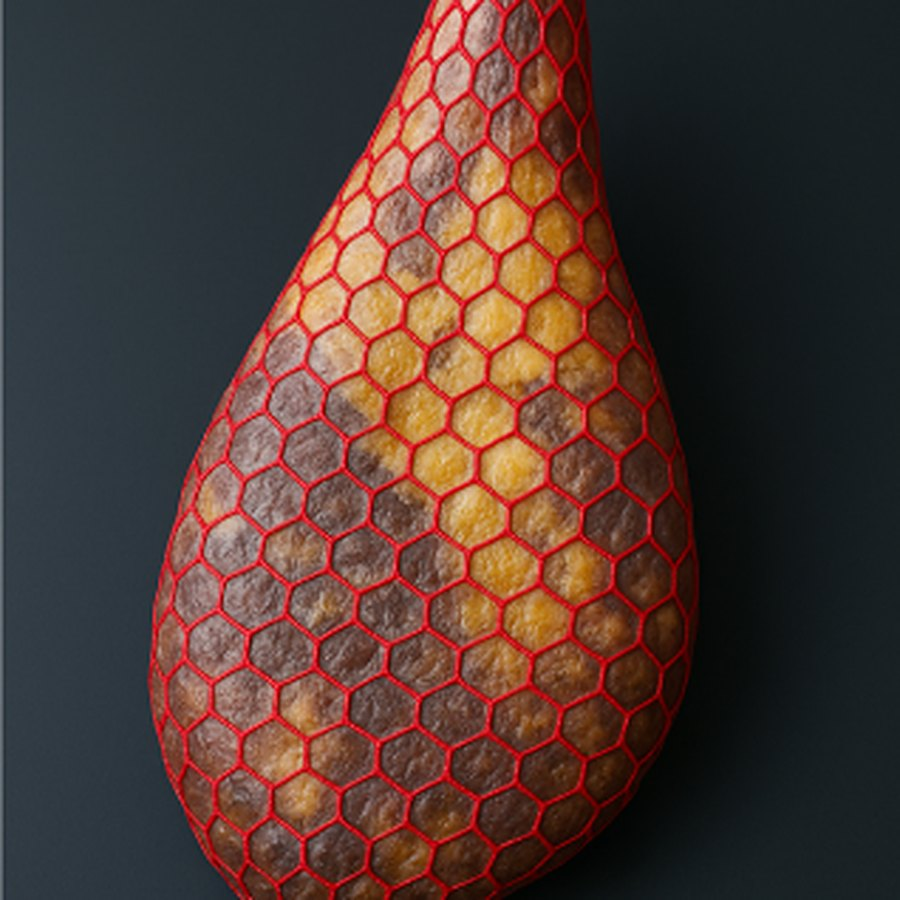

Non-elastic netting for ham, mortadella and Milano salami
Diamond or hexagonal mesh with no elastic thread, for pieces that need containment and an even mark without compression. Adjustable square size and 100 metre rolls.

- 60 squaresdiamond or hexagonal
- 100 m rollsfor ham
- Adjustable squaremade to measure for each piece
- Enets®knitted in our own plant
The result
Finished pieces made with our products




Which pieces it is for
For coppa, loin, pork belly and bresaola an elastic net is the better choice, as it follows shrinkage during curing.
- Ham: 60-square net, models Ham 40 and Ham 60 depending on the width of the piece
- Mortadella and Milano salami: non-elastic net made to measure, with the square size your process needs
- Wide-square kosher cuts: see kosher netting
Sizes
| Net | Flat width (cm) | Maximum width (cm) | Squares |
|---|---|---|---|
| Ham 40 | 3 | 40 | 60 |
| Ham 60 | 3 | 60 | 60 |
Frequently asked questions
When is a non-elastic net better than an elastic one?
When the piece does not shrink significantly during the process, such as cooked ham or mortadella, and you want containment and an even mark without compression.
Diamond or hexagonal?
They are two mesh patterns. They change the mark on the piece; containment is equivalent. We send samples of both.
Can the square size be adjusted?
Yes, on non-elastic nets the square is made to measure.